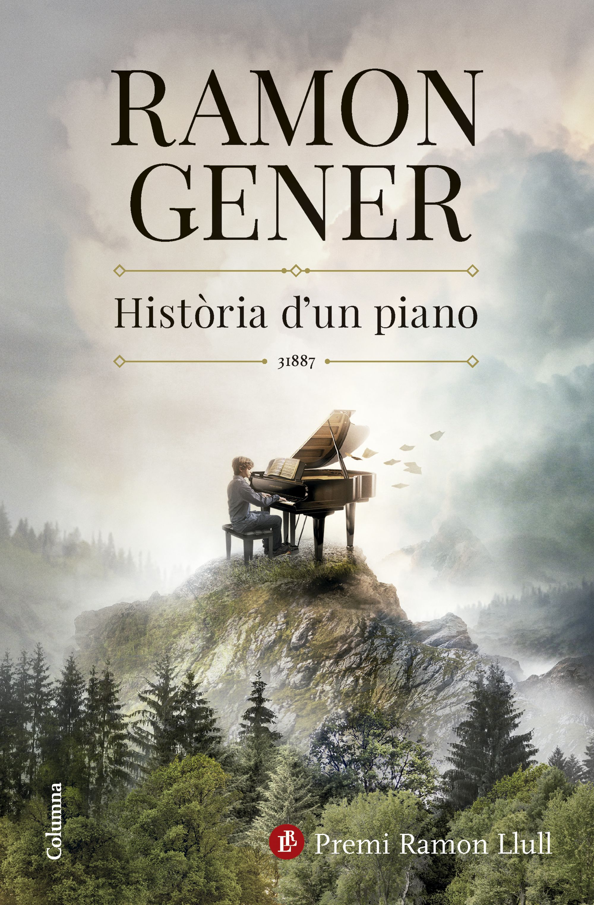
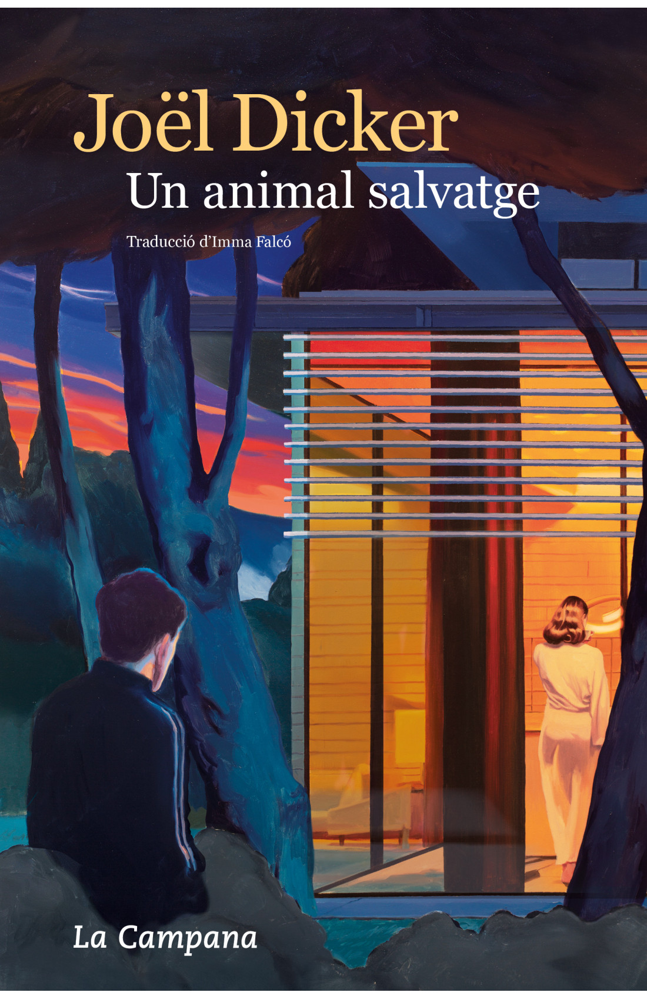
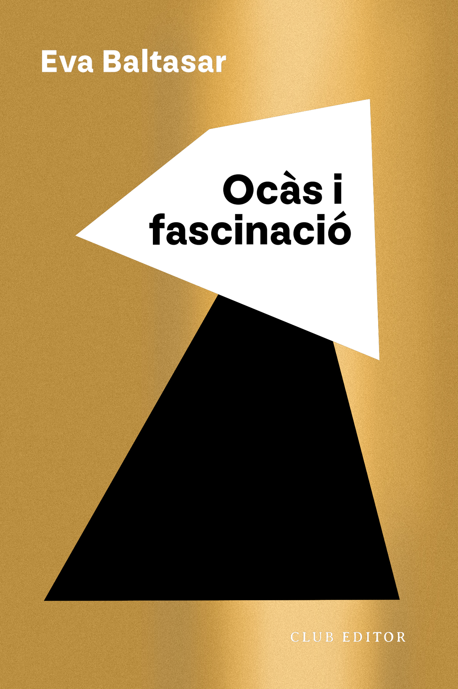
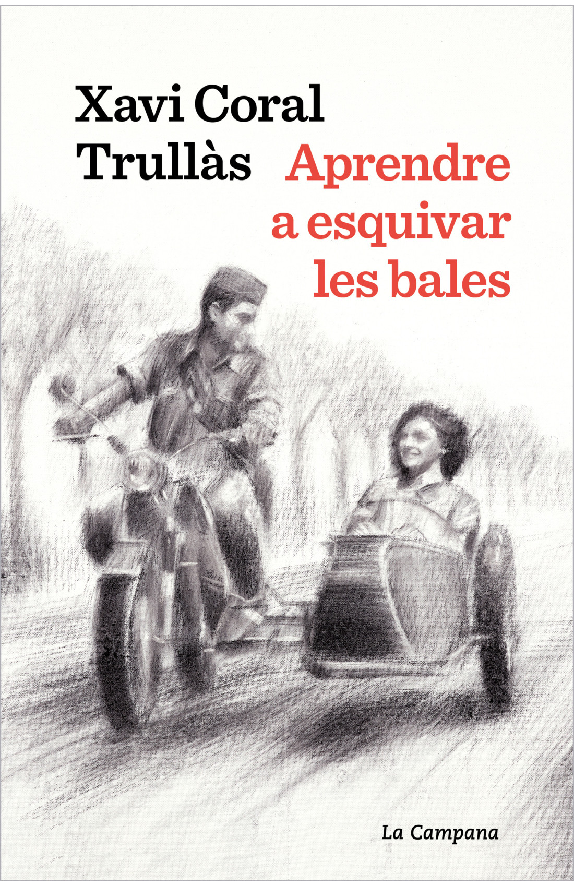

Història d'un Piano
Història d'un piano és una novel-la captivadora sobre la força d'un instrument que esdevé una metáfora del poder de redempció a través de l'amor, de l'amistat, de la bellesa i, per descomptat, de la música.

Un animal salvatge
El 2 de juliol de 2022 dos delinqüents es disposen a dur a terme un atracament en una important joieria de Ginebra. Un incident que difereix molt de ser un simple robatori. Vint dies abans, en una urbanització de luxe a la vora del llac Leman, la Sophie Braun es prepara per celebrar el seu quarantè aniversari.

Ocàs i Fascinació
Flotes, això és el màxim que has aconseguit. Tens mitja feina, una habitació rellogada i un titol que acredita que ets dels que no poden caure. Però caus. El risc ha entrat a la teva vida sense que el veiessis venir.

Aprendre a esquivar les bales
Amb l'inici de la Guerra Civil, Josep Trullás decideix allistar-se voluntari a defensar la República, deixant a Terrassa la família i un futur prometedor.